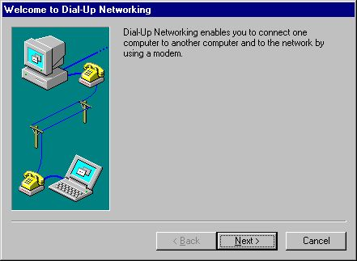

Hvorfor må du vente to ganger på fetch?
De to await-ene
const response = await fetch('/api/pokemon');
const data = await response.json();
Hvorfor den andre?
Vi har jo allerede responsen?
Ikke sant?
const data = await response.json();
JSON.parse gjør ~170 MB/s.Det er ikke parsing som er flaskehalsen.
const data = JSON.parse(myJsonString);
.text() 🏃 og .blob() 🚀
const text = await response.text();
const blob = await response.blob();
fetch egentlig?✨Response✨
-objektet
const response = await fetch("/api/pokemon");
const text = await response.text();
const json = await response.json();
const blob = await response.blob();
const response = await fetch("/api/pokemon");
console.log(response);
ok: true
status: 200
statusText: ""
headers: Headers {}
url: "/api/pokemon"
type: "basic"
redirected: false
body: ReadableStream
bodyUsed: false
HTTP-forespørsel
const response = await fetch("/api/pokemon");
GET /api/pokemon HTTP/1.1
Host: fetch-server.fly.dev
Accept: application/json
HTTP-svar
HTTP/1.1 200 OK
Content-Type: application/json
Content-Length: 214016
[{
"id": 1,
"name": {
"english": "Bulbasaur",
"japanese": "フシギダネ"
},
"type": ["Grass", "Poison"],
...
... mye mer data ...
Det viktige!
fetch returnerer så snart headerne har
kommet
Body-en kan fortsatt være på vei

Bytes må fortsatt reise
Tilbake til responsen
ok: true
status: 200
statusText: ""
headers: Headers {}
url: "/api/pokemon"
type: "basic"
redirected: false
body: ReadableStream
bodyUsed: false
Hva er en stream?

En kontinuerlig strøm av bytes
Credit: juancajuarez - stock.adobe.com

Samle opp litt og litt data og behandle det
Credit: Komarov Andrey - Fotolia
Simulert treg tilkobling
import express from "express";
import path from "path";
import fs from "node:fs";
const app = express();
const port = 3000;
app.get("/api/pokemon", (req, res) => {
res.status(200);
res.setHeader("Access-Control-Allow-Origin", "*");
res.setHeader("Content-Type", "application/json");
// 209 KB
const filePath = path.join(__dirname, "pokemon.json");
const stream = fs.createReadStream(filePath, { encoding: "utf8" });
stream.on("readable", () => {
const intervalId = setInterval(() => {
const chunk = stream.read(1);
if (chunk !== null) {
res.write(chunk);
} else {
clearInterval(intervalId);
res.end();
}
}, 5); // 1 byte hver 5 ms = 0.2KB/s
});
});
Er dette for tregt?

pokemon.json
$3{,}5\text{x}$ denne fila hvert sekund
Hente hele greia
const response = await fetch("/api/pokemon");
const data = await response.json();
Tid brukt: 0s
Hvor lang tid tar dette?
Det er $17{,}5$ minutter!
Finnes det en bedre måte?
Selvsagt!
🌊 Streaming 🌊
Streaming
response.body er en
ReadableStream
Det betyr at vi kan konsumere dataen etter hvert som den kommer
const response = await fetch("/api/pokemon");
const decoder = new TextDecoder("utf-8");
let data = "";
for await (const chunk of response.body) {
data += decoder.decode(chunk);
}
Tid brukt: 0s
Begge metodene er ferdige etter cirka 17 minutter
Men brukeren får innhold for én av dem!
streaming er fantastisk
Egentlig ganske smart
- Vi har headerne, så vi kan handle umiddelbart
- Body-en er ikke alltid ferdig (tenk Server-Sent Events)
- Vi kan vise noe før alt er ferdig nedlastet
Bør vi streame alt?
Selvfølgelig ikke!
Den vanlige måten holder for det meste
Vurder streaming hvis du har:
- Ekstra store payloads
- Ekstra små hastigheter
…eller paginer dataen, hent et par greier av gangen
Tusen takk!
Jeg heter Truls
Slides på github:
github.com/trulshj/presentation